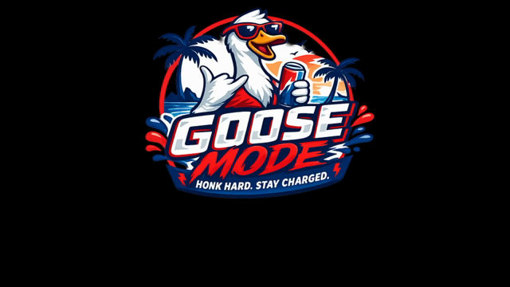

Small wings. Big plans.
Double-jump across lakes. Hold to glide farther, release to duck below flying trouble.

HONK HARD.LATE FOR KICKOFF. EARLY FOR CHAOS.
One goose. Zero chill.
Get to the match. Collect the balls.
Whatever you do, don’t walk.
Jump the trouble. Grab the footballs.
Three cans unlock six seconds of Goose Mode.
Sign in on the site to save your best.
| # | Player | Score | Distance | Pace | Honks |
|---|
One entry per player. Stats come from your highest-scoring run. Honks count powered-up obstacle hits.
Double-jump across lakes. Hold to glide farther, release to duck below flying trouble.
Collect three Goose Mode cans. Get charged. Smash through the opposition.
Ducks above, lakes below. The pace climbs without a cap. Powered-up hits earn honks. Signed-in players compete for a personal best.